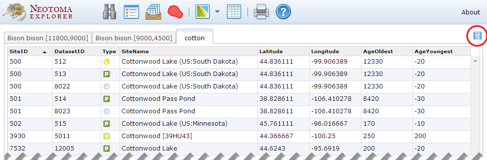

- Click the button to open the Tables view.
- Tables can be sorted by clicking on a column header; change the sort direction (ascending/descending) by clicking the header again.
- To save a table as a comma-delimited text file, make the table visible, then click the
 button.
button.
Created with the Personal Edition of HelpNDoc: Free Kindle producer